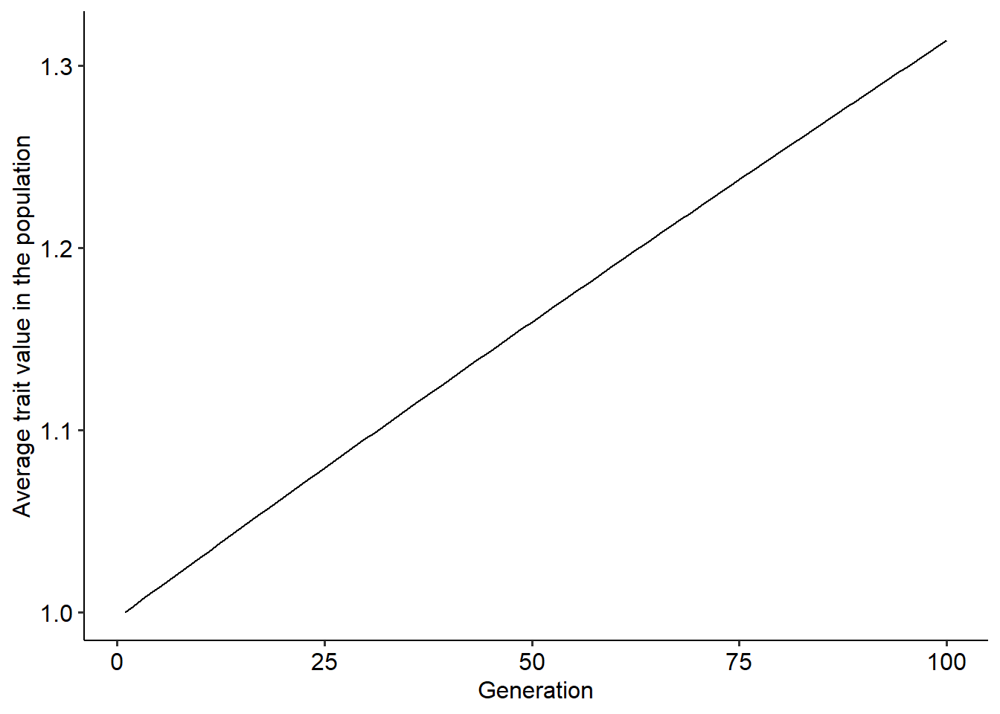

5 Exercise: Simulating evolution using Lande’s equation
5.1 Simulating evolutionary changes in continuous traits
Our third lecture introduced the classical equation in quantitative genetics derived by Russel Lande (1976). After studying and going through the steps to derive this equation, here we will use it to simulate evolutionary changes in continuously varying traits. Lande’s equation relates how the mean value of a continuous trait in a population (\(\overline{z}\)) changes from one generation to the other in response to the available variance of the trait in the population (\(\sigma^{2}_{z}\)), its heritability, \(h^2\), and direction and intensity of natural selection. The direction and intensity of selection on the trait is mathematically described by the selection gradient, \(\frac{\partial ln\overline{W}}{\partial \overline{z}}\). These two components underly Lande’s equation and can be used to predict evolutionary changes in \(\overline{z}\) as follows:
\[ \Delta \overline{z}=h^2 \sigma^{2}_{z}\frac{\partial ln\overline{W}}{\partial \overline{z}} \]
There are two main approaches that we can use to model evolutionary changes using Lande’s equation. For the first one, our starting point is a function describing how the fitness of individuals vary with trait values. We next use this function to derive a new one, describing how the mean fitness of the population depends on the mean values of traits. Finally, we derive the selection gradient which can then, be plugged in into Lande’s equation. The second approach is directly assuming a function for the selection gradient. Here, we will use the first approach, but we will also see how to use the second one in block 2 of the course.
Thus, our first step is to define a function, \(W(z)\), describing how fitness of individuals vary with trait values. We will use the two fitness functions that are similar to the ones used in the previous exercise section, as follows:
\[\begin{align} W_{1}(z) &= 1+\beta z \\ W_{2}(z) &= e^{-\alpha\left(\theta-z\right)^2} \end{align}\]
We now need to derive how mean fitness changes relative to mean trait values. To do so, we need to compute the expected value of the fitness function of individuals. For linear functions of random variable, such as \(W_{1}(z)\), computing an expected value is straightforward because of two identities: \(E[aX]=aE[X]\) and \(E[X+b]=E[X]+b\). For our function \(W_{1}(z)\), we can apply these two identities as follows:
\[ E[1+\beta z] = 1+E[\beta z]=1+\beta E[z]=1+\beta \overline{z} \] where we used the equivalence \(E[z]=\overline{z}\) just to simplify the notation. For the second fitness function, \(W_{2}(z)\), we need to rely on an approximation to compute the expected value. When \(z\) is normally distributed (as it needs to be when applying Lande’s equation), with small values of \(\alpha\) or variance, \(\sigma^2\), we can approximate this expectation as follows:
\[ E[e^{-\alpha\left(\theta-z\right)^2}] \approx e^{-\alpha\left[\left(\theta-\overline{z}\right)^2 + \sigma^2\right]} \]
We will not cover the approximation in the course, but it comes from how we can approximate \(E[ln f(X)]\) as \(lnE[f(X)]\) under the assumptions mentioned above (Barton 1986).
Our last step is to derive the selection gradient. For that we need to apply the natural logarithm to the functions above and compute their derivatives relative to the mean trait value. Computing derivatives is very straightforward when you are familiar with all of the rules. If you are not familiar with computing derivatives, we can do it using the function D() in R. To use this R function, we just need to define an expression and the variable that we wish to compute the derivative in that expression. The code to do so for the fitness function \(\overline{W}_{1}(\overline{z})\) is as follows:
## beta/(1 + beta * z)As you can see, the derivative is equal to \(\frac{\beta}{1+\beta \overline{z}}\). We can repeat the same process for second fitness function, \(e^{-\alpha\left[\left(\theta-\overline{z}\right)^2 + \sigma^2\right]}\). Since we are computing the derivative of the natural logarithm of this function, we can simplify it as \(lnW_{2}(\overline{z})=-\alpha\left[\left(\theta-\overline{z}\right)^2 + \sigma^2\right]\) and use the simplified function to compute the derivative, as follows:
dw2=D(expression(-a*((theta-z)^2+v)), "z") #v here corresponds to the variance in the equation
print(dw2)## a * (2 * (theta - z))which evaluates to \(2\alpha (\theta-\overline{z})\). Now we have everything that we need to model how the mean value of the trait, \(\overline{z}\), changes over generations in the population. We will begin with how \(\overline{z}\) changes when we use the first fitness function. Plugging the selection gradient that we computed above for this fitness function in Lande’s equation, the equation that we need to iterate over is the following one:
\[ \overline{z}^{(t+1)}=\overline{z}^{(t)}+ h^2 \sigma^{2}_{z}\frac{\beta}{1+\beta \overline{z}^{(t)}} \]
Thus, as we did in the first exercise section, we need to define:
- A vector that will store trait values over time.
- The initial trait value in the population.
- The parameters of the model, such as the number of generations that we will simulate, \(t_{max}\), \(\beta\), \(\sigma^{2}_{z}\) and \(h^2\).
Then, after defining all of the parameters we iterate over the equation using a for loop. The code to perform these steps are as follows:
dz = c() #Defining vector to store trait values over time
z0 = 1 #Defining initial trait value in the population
dz[1] = z0 #Defining initial trait value in the population
tmax=100 # Number of generations
varz=0.1 # Phenotypic variance
h = 0.1 # Heritability
beta=0.5 #Parameter beta
for(t in 1:(tmax-1)){ #Setting up the for loop
z = dz[t] # Setting current trait values
dlnw = (beta/(1+beta*z)) #Computing the selection gradient of fitness function 1
dz[t+1]= z + h*varz*dlnw #Updating trait values using Lande's equation
}Now, as we did before, we can put the above code inside a function to make it easier to explore the simulations and plot the results.
library(ggplot2)
library(ggpubr)
evo_simulation<-function(tmax, z0, varz, h, beta){
dz = c() #Defining vector to store trait values over time
dz[1] = z0 #Defining initial trait value in the population
for(t in 1:(tmax-1)){ #Setting up the for loop
z = dz[t] # Setting current trait values
dlnw = (beta/(1+beta*z)) #Computing the selection gradient of fitness function 1
dz[t+1]= z + h*varz*dlnw #Updating trait values using Lande's equation
}
r = data.frame(dz=dz, t=1:tmax) # Building the data frame with trait values over time
return(r)
}
# Running the function to test it:
r = evo_simulation(tmax=100, z0=1, h=0.1, varz=0.1, beta=0.5)
# Plotting the result
ggplot()+
geom_line(data=r, aes(x=t, y=dz))+
xlab("Generation")+ylab("Average trait value in the population")+
theme_pubr()
Using the function above, explore how different parameter values change the outcome of the evolutionary dynamics. Try to think about why we have this outcome in face of the fitness function that we are using.
5.2 Simulating the adaptive landscape of a continuous trait
Before proceeding to the second fitness function, we can gain more intuition about the outcome of the evolutionary dynamics when we visualize the fitness landscape of the trait. To do so, we will repeat a similar procedure to what we have already done in the first exercise section. We will go through the following steps:
Build a vector containing many different values of \(\overline{z}\).
Compute the average fitness of the population, \(\overline{W}\), for each of these values of \(\overline{z}\) using the fitness function.
Plot and visualize the fitness landscape.
beta=0.5 #Defining parameter beta
z = seq(0, 10, 0.001) # Step 1
w_avg = 1+beta*z #Step 2
land = data.frame(z, w_avg) #Building a data frame with values of p and the corresponding average fitness
# Plotting the landscape.
ggplot()+
geom_line(data=land, aes(x=z, y=w_avg))+
xlab("Average trait value in the population")+ylab("Average fitness of the population")+
theme_pubr()Now that we have the adaptive landscape, try to think about its shape and how evolution proceeds when we use the first fitness function. Your task for this section will be to adapt the code to simulate the evolutionary dynamics and the fitness landscape when we use the second fitness function, \(e^{-\alpha\left[\left(\theta-\overline{z}\right)^2 + \sigma^2\right]}\). Use both the function and the selection gradient, \(2\alpha (\theta-\overline{z})\), to simulate the adaptive landscape and the evolutionary dynamics of the trait. Try to answer the following questions:
For both fitness functions, is there and end point to the evolutionary dynamics? If it does so, what would be this end point?
From the shape of the adaptive landscapes, could you predict how evolution would proceed in the population?
What sources of selective pressures and biological mechanisms could lead to these two adaptive landscapes and their underlying evolutionary dynamics?